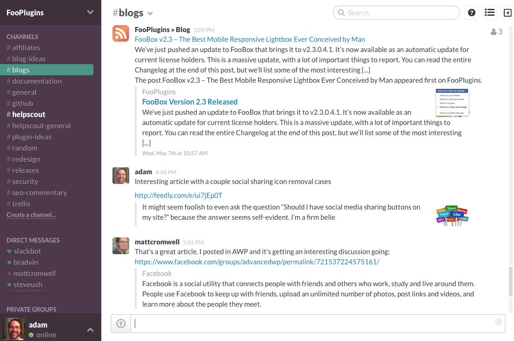
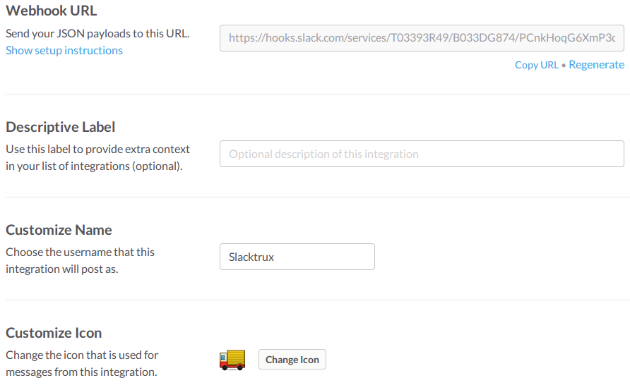
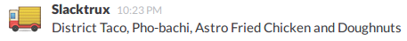

Food Truck Tracking in Slack
Providing Prescient Postings for Peckish Pythonistas
This talk...
- Won't cover: Aggregating truck locations.
- Won't cover: Parsing locations from Tweets using NLP.
- Won't cover: Using your collection of James Bond gadgets to affix small transponders to moving vehicles at dangerously high speeds.
- Will cover: Using Python to connect existing services.
Problem
- Developers need food.
- Food comes from trucks.
- Truck info is poorly aggregated.
Solution?
Food truck tracking sites!
Problem
- They suck.
- Many clicks, no deep linking.
- Coworkers spend a lot of time independently looking up listings.
Slack
Slack
- Web-based messaging client.
- Similar to IRC w/channels.
- Collaborative features out of the box.
- All our devs use it.
- Extensible.
+  = ?
= ?
A solution
- The user asks Slack for nearby food trucks.
- Slack queries a webservice for trucks in the area.
- Slack publicly displays the results (so others don't have to ask).
Listing food trucks
No formal API available.
No problem - scraping to the rescue.

PSA: Be respectful to the sites you scrape.
Scraping with Python
- Heavy duty? Scrapy.
- Everything else: Roll your own.
A custom scraper
- Python
- Requests
- Beautiful Soup
Your first request
import requests
url = "http://arusahni.net/slack-demo/listing.html"
response = requests.get(url)
# Print the full page markup
print(response.text)
Output
<html>
<body>
- District Taco
- Pho-bachi
- Astro Fried Chicken and Doughnuts
</body>
</html>
Getting fancy
from bs4 import BeautifulSoup
soup = BeautifulSoup(response.text)
trucks = soup.find_all("li")
for truck in trucks:
print(truck.text)
Output
District Taco
Pho-batchi
Astro Fried Chicken and Dougnuts
Putting it all together
import requests
from bs4 import BeautifulSoup
URL = "http://arusahni.net/slack-demo/listing.html"
def scrape_food_trucks():
response = requests.get(URL)
soup = BeautifulSoup(response.text)
trucks = soup.find_all("li")
return [truck.text for truck in trucks]
Slacking off
Integrating with Slack is straightforward...
- Slash-command calls the food truck script.
- e.g. /foodtrucks
- The script pipes output to Slack.
Putting the script online
To be reachable, the script needs to live online.
Creating a webservice: Boilerplate
from flask import Flask
APP = Flask(__name__)
def scrape_food_trucks():
# ...
@APP.route("/trucks")
def get_trucks():
return ", ".join(scrape_food_trucks())
Slash-command Payload
token = vPpj7lO3xdOMK18EDDQWR5Bi
team_id = T0001
channel_id = C2147483705
channel_name = <name>
user_id = <user_id>
user_name = <user_name>
command = /foodtrucks
text = <optional parameters>
token = vPpj7lO3xdOMK18EDDQWR5Bi
team_id = T0001
channel_id = C2147483705
channel_name = <name>
user_id = <user_id>
user_name = <user_name>
command = /foodtrucks
text = <optional parameters>
Protect ya neck
from flask import Flask, request, abort
APP = Flask(__name__)
TOKEN = "vPpj7lO3xdOMK18EDDQWR5Bi"
@APP.route("/trucks")
def get_trucks():
if request.args.get("token") != TOKEN:
abort(401) # "Unauthorized" HTTP status code
return ", ".join(scrape_food_trucks())
Integrating with Heroku
- Hosted SaaS platform.
- Allows you to scale up and drop in new components.
- Uses git for code deployment
Add pre-requisites
# Install server
pip install gunicorn
# Capture dependencies
pip freeze > requirements.txt
# Specify Python version
echo "python-3.4.1" > runtime.txt
# Point the server to the app
echo "web: gunicorn foodtrucks:APP --log-file -" > Procfile
Get things going
# Instantiate a Heroku project and tie it to your repo
heroku create --http-git
# Push your master branch to Heroku
git push heroku master
# Get APP URL from above and enter it in the Slack configuration
Give it a whirl!
Kinda sorta done
- We've got listings!
- ... but I'm the only one that can see them!
Incoming webhooks
- Allow external services to push data into Slack.
- Deliver JSON payloads to predetermined URIs.
- Can be used to broadcast messages to a room.
Appearance
The payload
payload = {"text": ', '.join(scrape_food_trucks())}
Updating our service
import json
import requests
TOKEN = "vPpj7lO3xdOMK18EDDQWR5Bi"
WEBHOOK_URL = "https://hooks.slack.com/services/T03...6XmP3cY6J95xt95w"
@APP.route("/trucks")
def get_trucks():
if request.args.get("token") != TOKEN:
abort(401) # unauthorized
payload = {"text": ', '.join(scrape_food_trucks())}
resp = requests.post(WEBHOOK_URL, data={"payload": json.dumps(payload)})
if resp.status_code != 200:
return "HTTP {}: {}".format(resp.status_code, resp.text), 500
return ""
And that's it!
What's next?
- Replace the food truck tracking site.
- Have the bot post whenever the tracking service updates the listings for your area.
- Start packing your lunch.
Fin.
We're always looking for talented Python developers.